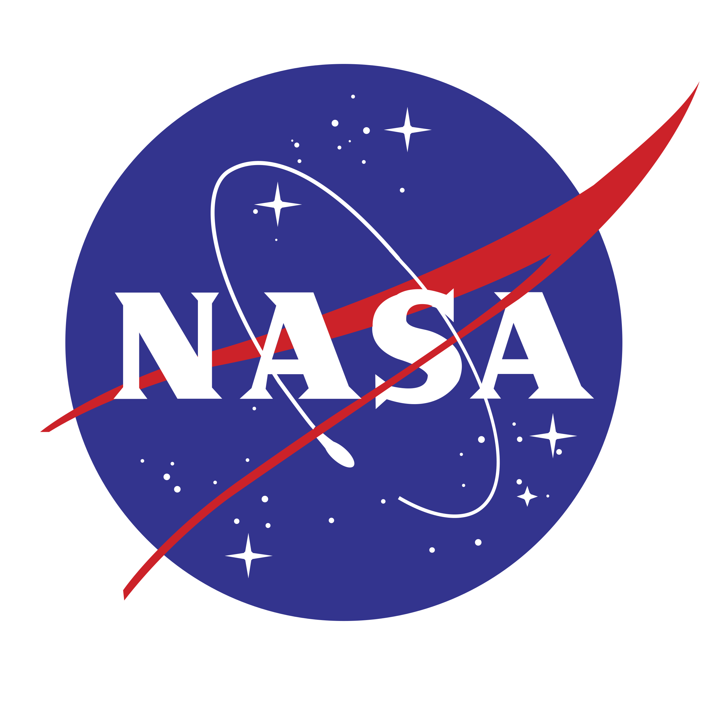
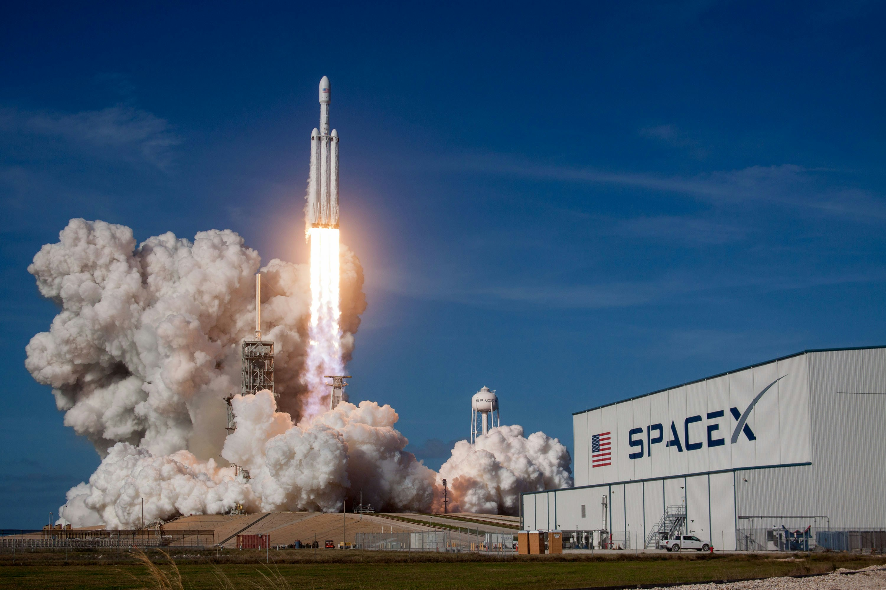
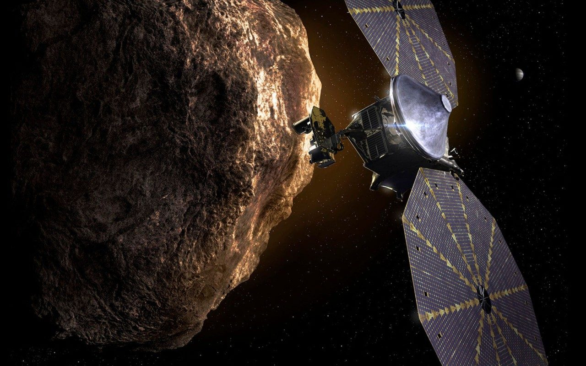

Competition


NASA
NASA's mission is to advance scientific knowledge and space exploration. It uses its budget to fund projects, research, and missions that are often too large, complex, or long-term for a private company to undertake alone. It also provides oversight and expertise to its commercial partners to ensure safety and mission success.
Although not commercial it's entirely a United States government space agency, which has the advantage of government funding. They have had a budget of around $25 billion US dollars annually over the past few years.
NASA operates its own launch sites, such as the Kennedy Space Center, but it primarily contracts with companies like SpaceX and United Launch Alliance (ULA) for the actual rocket launches. It no longer operates its own fleet of launch vehicles.
They have the best-in-class and top of the line satellite capabilities with the Hubble Space Telescope, James Webb Space Telescope(JWST) and the Mars Reconnaissance Orbiter (MRO) to name a few.
If we focus on their latest and greatest telescope/satellite the James Webb Space Telescope(JWST) here are some of the instruments and their capabilities:
- Cameras: These capture two-dimensional images. NIRCam and NIRISS focus on near-infrared light, while MIRI handles mid-infrared.
- Spectrographs: Found in all four of Webb's instruments, these components spread light into a spectrum to measure the brightness of each wavelength.
- Coronagraphs: These are opaque disks used to block the light from bright stars, allowing the telescope to detect the fainter light of orbiting planets and debris disks. NIRCam and MIRI have them.
- Filters: Similar to camera filters, these are used across all instruments to isolate specific wavelengths of light.
Detectors: This device converts light into digital data for transmission to Earth. These detectors, similar to those in digital cameras, form arrays that store information like brightness and wavelength.
- Microshutter Array (MSA): Unique to the NIRSpec instrument, this grid of 248,000 tiny doors allows Webb to capture spectra from up to 100 different objects simultaneously.
- Integral Field Unit (IFU): This component combines a camera and a spectrograph to map spectra across a field of view, helping scientists understand how objects vary in space. NIRSpec and MIRI have IFUs.
- Aperture Mask: Found only in the NIRISS instrument(camera), this metal plate with seven holes improves resolution and allows for detailed imaging of very bright objects.
Its key objectives are to witness the formation of the universe's first stars and galaxies, study how galaxies have evolved over billions of years, look into the dusty environments where stars and planets are born, and search for potential signs of life by analyzing the atmospheres of distant exoplanets.


SpaceX
SpaceX is both a satellite manufacturer(Starlink) and a launch provider. They have the advantage of sending their satellites into orbit with reduced time and cost. They are able to mass produce their satellites driving down the cost to manufacture as well as being able to sell their satellites as a service by providing internet access to even the remotest areas in parts of the world.
As of writing this proposal they have more than 8,000 operational Starlink satellites in Low Earth Orbit. These were launched with two different rockets - the Falcon 9 Rocket and the Falcon Heavy which both have the advantage of being a reusable rocket driving down the price of relaunching the system repeatedly.
SpaceX also works closely with NASA, with several contacts on up-and-coming missions, notably the NASA Launch Services (NLS) II contract which will utilize the Falcon 9 and Falcon Heavy rockets to launch NASA's planetary, Earth-observing, exploration, and scientific satellites.

Lockheed Martin
Lockheed Martin is a major defense and aerospace company with extensive satellite capabilities, focusing on a wide range of missions for both government and commercial clients. Unlike new space companies like SpaceX that are building their own products for commercial services, Lockheed Martin's primary business model is to develop and build custom, high-tech satellites for specific customer needs.
In 2024 for space-related activities, they made $12.4 billion(USD) in sales, which includes development of national security, civil, commercial and weather spacecraft, strategic and missile defense solutions and hypersonics missions.
They proactively invest their own resources into developing and testing new technologies, even before a customer contract is secured, this approach allows the company to reduce risk for its clients and deliver solutions faster. Furthermore, they partner with a diverse range of companies, both established and emerging, this strategy is designed to speed up the development of new technologies and create a resilient and flexible supply chain.
If we look at the LM400, a multimission capable satellite platform, it's a “common bus” that can be customized for military, civil, and commercial uses. Its missions can include remote sensing, communications, imaging, and radar. This versatility allows Lockheed Martin to reduce costs and production timelines by leveraging a single, proven design across multiple contracts.The LM 400 is capable of operating in low Earth orbit (LEO), medium Earth orbit (MEO), and geosynchronous Earth orbit (GEO), tuned for the customer or mission's needs.